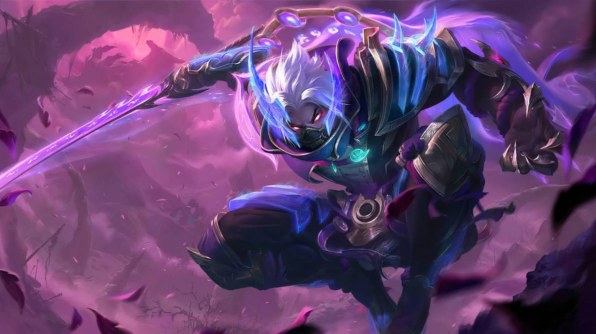
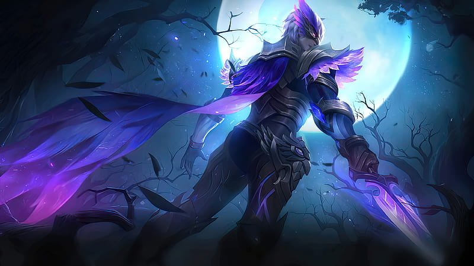
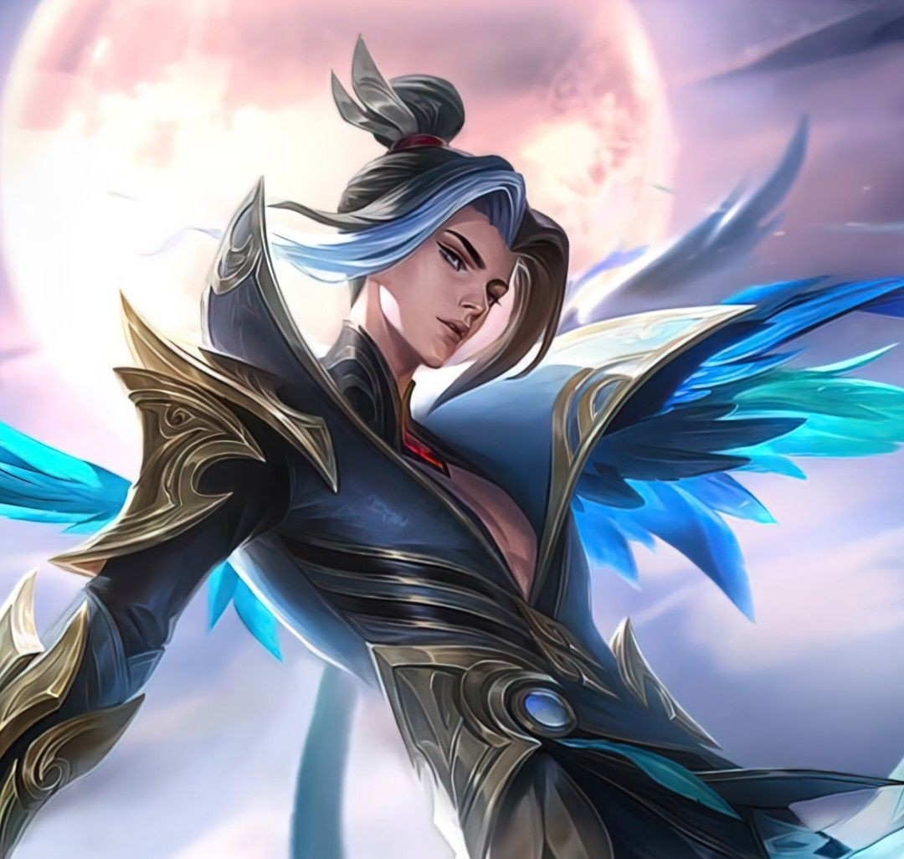

Hayabusa
Hayabusa is a high-mobility Assassin in Mobile Legends:
Bang Bang renowned for his split-pushing, slippery
escape mechanics, and single-target burst damage.
He is a Jungler who excels at killing isolating enemies, executing
squishy carries, and diving in and out of team fights.

Gusion
Gusion is a high-burst, melee Assassin in Mobile
Legends: Bang Bang, widely known for his lightning-fast
combos, high mobility, and extreme carry potential. He excels
at instantly eliminating isolated squishy targets, making him a
dominant threat as a Jungler and the Mid Laner.

Ling
Ling is a highly-mobile Assassin in Mobile
Legends: Bang Bang known for his ability to leap
across walls. He excels at split-pushing, diving into the
enemy backline to eliminate squishy targets, and escaping
sticky situations. However, he is squishy, highly dependent
on energy, and heavily countered by crowd control.